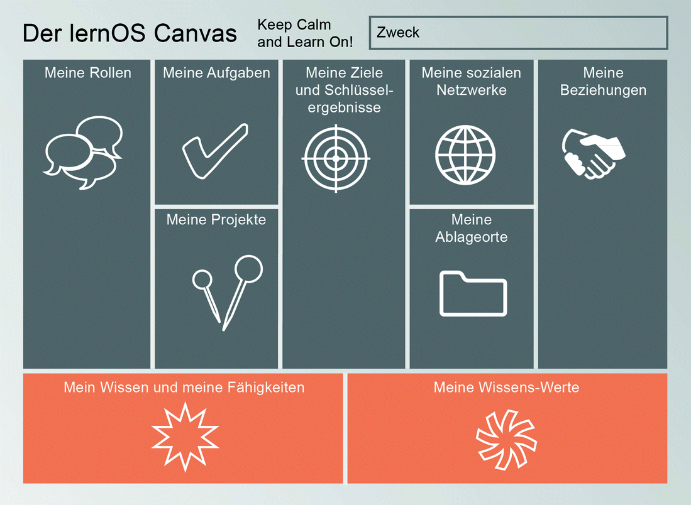
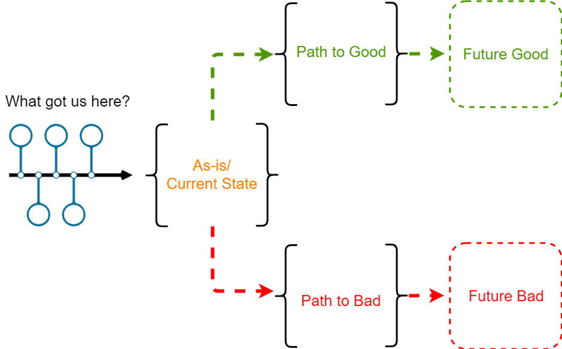
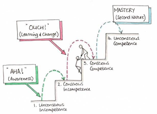

Lernpfad
Wenn du dich 12 Wochen mit einem Thema beschäftigst, ist das gleichzeitig sehr viel und sehr wenig Zeit. Dieser Lernpfad enthält
-
eine Anleitung, die dich 12 Wochen (Weeklys^5^) durch deine Lernreise führt, mit Denkanstößen, Tipps und wichtigen Leitfragen
-
18 Katas^6^ (Übungen), die dir dabei helfen, das Beste aus dir und deinem (Learning)Circle^7^ herauszuholen
-
weiterführende Literatur und Links, um deine Lernreise zu vertiefen oder fortzusetzen
Wie ist dieser Lernpfad aufgebaut?
Der Lernpfad ist sowohl für Anfänger*innen als auch für Fortgeschrittene geeignet. Du findest in diesem Leitfaden zunächst die Anleitungen für die 12-wöchige Lernreise. Daran schließt sich die Liste der Übungen, der Kata--Log, an. Unter „Ressourcen" haben wir wertvolle Hinweise auf Literatur, Videos und andere Quellen für dich zusammengestellt. Hier gibt es auch einen Glossar, der das verwendete Fachchinesisch erklärt.
Wie gehst du mit dem Lernpfad um?
Nimm dir vor Start der Lernreise (Sprint^8^) Zeit, den Aufbau und die einzelnen Katas genauer anzuschauen. Manchmal gibt es mehrere Katas in einer Woche. Such dir eine aus oder mach beide, je nach Lust und Laune. Es gibt keine Kata-Polizei: Tausch gerne Katas aus oder modifizier sie, damit sie besser zu deinen Zielen passen. (siehe lernOS-Leitfaden)
Wie kannst du mit anderen Interessierten lernen?
Du möchtest mit deinem Lernpfad loslegen, würdest aber gerne in einer Gruppe starten? Wenn du dich in sozialen Netzwerken wie Facebook, Instagram oder Twitter bewegst, dann frag dort in einem Post nach weiteren Interessierten. Nutze dafür auch die Hashtags #lernOS und #diversityandInclusion oder #Diversitymatters.
Du kannst die Autor*innen des Leitfadens taggen, so kann dein Post einfacher gesehen und weitergeleitet werden.
Den Circle organisieren
#ProTipp: In vielen Fällen ist die Zeit für das Ausführen der Übungen im Weekly zu kurz. Wir empfehlen daher die Flipped-Classroom-Methode. Für jedes Weekly gibt es eine Kata, die jedes Circle-Mitglied als „Hausaufgabe" vorbereitet, sodass im Weekly mehr Zeit bleibt, die Ergebnisse zu besprechen. Dies wird begleitet durch Leitfragen, die ergänzt werden können. Und immer wieder gibt es auch Katas, die gemeinsam während des Weeklys absolviert werden.
Auch im Circle wählst du deinen eigenen Schwerpunkt für den Sprint -- was willst du neu lernen oder vertiefen? Wo stehst du? Was ist herausfordernd? Was ist jetzt gerade dran und wie geht es dann weiter? Was wäre eher ein Schwerpunkt für einen weiteren Sprint? Wie willst du vorgehen? „Alles auf einmal und dann perfekt" (mit Überforderung/Frust) oder lieber doch „practice makes progress" (Brandy Agerbeck) -- Übung bringt Fortschritte (und Spaß).
Woche 0: Koffer packen / Komm in Reisestimmung / Deine Motivation / Deinen Sprint planen
Es geht los! Deine lernOS-Diversity & Inclusion-Reise beginnt. Kennst du schon deine Mitreisenden? Wenn nicht, dann ist heute Zeit dafür. Du wirst deine Circle-Partner*innen in den nächsten 12 Wochen mindestens 1 x wöchentlich sehen oder hören. Deshalb nutze heute den Circle, um ein paar Dinge gemeinsam zu planen.
Es gibt unterschiedliche Reisende. Manche starten die lernOS-Reise und vertrauen darauf, dass die Reiseleitung einen guten Job gemacht hat, und lassen die einzelnen Wochen auf sich zukommen. Andere möchten die Etappenziele kennen und verstehen. Je nachdem, zu welchem Typ du gehörst, schau dir den lernOS-Pfad an und beschäftige dich mit ihm. Lass dich nicht entmutigen, wenn du dir nicht auf alle Wochen einen Reim machen kannst. Die Etappenziele bauen aufeinander auf und die einzelnen Katas sind wichtig, um die nächsten Schritte nachzuvollziehen.
Eine Besonderheit von Woche 0: Im Circle befasst du dich mit der Organisation und bekommst zusätzlich Katas (Übungen) für Woche 1. Ab der folgenden Woche bearbeitest du ausschließlich Katas und kannst den wöchentlichen Zeitaufwand reduzieren.
Als Vorbereitung
- Kata 0.1: lernOS-Canvas
- Kata 0.2: Koffer packen
Im Weekly
- Check-in (ca. 10min)
Willkommen, schön dass du dabei bist! Denk einen Moment darüber nach, warum du dich einem lernOS-Circle angeschlossen hast. War es der Wunsch nach mehr? Eine Reaktion auf ein Ereignis bei der Arbeit oder in deinem Leben? Ob es sich nun um ein Streben oder eine Reaktion auf etwas handelt, nimm dir jetzt einen Moment Zeit, um deine persönlichen Gründe aufzuschreiben und teil dies sowie weitere Informationen zu deiner Person deinem Circle mit. Jedes Circle-Mitglied stellt sich in 5 Minuten vor.
-
Austausch (ca. 40 min gesamt)
-
Check-out (ca. 10 min)
Was nimmst du dir bis nächste Woche vor?
Ziel für das Weekly in der kommenden Woche: ein Ziel entwickeln. Doch wie gelingt dies? Folgendes Tool steht dir in der nächsten Woche zur Verfügung, um dein Ziel zu schärfen:
Das lernOS-Canvas dient als visuelle Checkliste und als Struktur für deine Lernreise. Es bewahrt vor blinden Flecken und lässt sich durch den Einsatz von Haftnotizen leicht anpassen. Am besten besprichst du dein fertiges lernOS-Canvas mit einer Person vor dem nächsten Weekly. Ein Gespräch über das lernOS-Canvas empfiehlt sich auch, wenn du Fragen hast und nicht weiterkommst.
Leitfragen:
-
Wer bist du? Stell dich vor. (5 min pro Member)
-
Was hat dich bewogen diesen Lernpfad für dich zu beschreiten?
Woche 1: Wo startest du?
In dieser Woche geht es darum, den Grundstein für die nächsten 12 Wochen zu legen. Kannst du alles auf einmal erreichen, was du im lernOS-Canvas herausgefunden hast, oder ist es sinnvoll, Teilziele zu identifizieren? Was willst du zum Thema „Diversity\" am Ende des Lernpfads erreicht haben? Ein Tipp: Wenn du zum ersten Mal eine Lernreise in dieser Form machst, nimm dir nicht zu viel vor. Du wirst dein Ziel in den nächsten 4 Wochen immer wieder nachjustieren und verfeinern.
Als Vorbereitung
- Kata 1: Wo startest du?
Im Weekly
- Check-in (ca. 10 min)
Wie geht es dir aktuell? Was hast du seit der letzten Woche erreicht?
Angebot: Mal ein Bild mit deiner nicht dominanten Hand zu deiner aktuellen Stimmung.
Warum? Lernfähigkeit, Konzentrationsfähigkeit und Kreativität werden gefördert.
- Austausch (ca. 40 min insgesamt)
Feedback und Tipps zu den Katas (40 min)
- Check-out (ca. 10 min)
Was nimmst du dir bis zur nächsten Woche vor?
Wenn sich dein Circle für das Prinzip Flipped Classroom entschieden hat, dann bearbeite im Vorfeld des nächsten Treffens die Kata aus Woche 2.
Wenn Du mit Working Out Loud^9^ oder lernOS noch nicht vertraut bist, dann plane für euch sicherheitshalber ein wenig mehr Zeit ein.
Austausch: Eure Ziele im Sprint (10 min pro Member)
- Teil deine Ziele aus Kata 1 mit den anderen.
Leitfragen:
-
Warum machst du das?
-
Was inspiriert dich daran ?
-
Was heißt es für dich, ein Ziel erreicht zu haben?
-
Wie feierst du, wenn du dein Ziel erreicht hast?
<!-- -->
- Hast du einen Termin mit dir selbst in den Kalender eingetragen? Was hat dir dabei geholfen?
Woche 2: Dein Ziel in zehn Worten oder weniger
In dieser Woche wirst du dein Ziel für die nächsten zwölf Wochen noch einmal auf Herz und Nieren prüfen. Mit verschiedenen Übungen schärfst du den Blick auf dein Ziel.
Ein Tipp: Wenn du zum ersten Mal eine Lernreise in dieser Form machst, nimm dir nicht zu viel vor. Du wirst/kannst dein Ziel in den nächsten Wochen noch verfeinern oder ändern.
Als Vorbereitung
- Kata 2: Dein Ziel in zehn Worten oder weniger
Im Weekly
- Check-in (2 min pro Member)
Was hast du seit letzter Woche alles erreicht? Was hattest du dir vorgenommen, konntest es aber nicht erreichen? Woran lag das jeweils?
- Austausch (40 min)
Feedback, und Tipps zu den Katas
Spar nicht mit Applaus, wenn jemand sogar weniger als sieben Worte braucht!
Allgemeiner Hinweis: Spar generell nicht mit Lob und Wertschätzung. ;-)
- Check-out
Wenn du dir letzte Woche etwas vorgenommen hattest, das du nicht erreichen konntest: Was kannst du tun, um diese Hindernisse für die kommende Woche aus dem Weg zu räumen?
Wer oder was kann dir dabei helfen?
Wenn ihr euch im Circle für das Prinzip Flipped Classroom entschieden habt, dann bearbeitet ihr im Vorfeld des nächsten Treffens die Kata aus Woche 3.
Woche 3: Ready steady go?! Schau dir deine Erfahrungen an
So langsam geht sie los: Deine eigene Diversity-Lernreise. In den letzten beiden Wochen hast du dich intensiv damit auseinandergesetzt, warum du dich auf diese Reise begibst und welche Ziele du mit der lernOS verbindest. Dabei hast du dir klare Ziele gesetzt und überlegt, was du brauchst, um die Lernreise erfolgreich zu meistern.
In dieser Woche wird es noch einmal darum gehen, dir selbst bewusst zu machen, aus welchem Blickwinkel du das Thema Diversity betrachtest. Wo startest du deine Reise? Welche Erfahrungen bringst du mit?
Du kannst diese Woche nutzen, um dich selbst zu reflektieren und zu prüfen: Durch welche Brille schaue ich auf das Thema Diversity? Und wie schaut mein Umfeld auf das Thema?
So gehst du sicher, dass du auf deiner Reise alle für dich wichtigen Aspekte im Blick hast. Diese Woche bietet dir somit auch noch einmal die Möglichkeit, die gewählte Reiseroute anzupassen oder fehlende Aspekte zu ergänzen. Zumindest bist du für die folgenden Wochen gerüstet.
Als Vorbereitung
- Kata 3: Ready steady go?! Schau dir deine Erfahrungen an
Im Weekly
- Check-in (2 min pro Member)
Was hast du seit dem letzten Lerntreffen gemacht? Wie sicher bist du mit der Zielsetzung? Gab es etwas, worüber du im Nachhinein gestolpert bist?
Wenn ja, teil deine Erfahrungen und Gedanken mit den anderen, wenn du magst.
-
Austausch über die Kata(s) (40 min)
-
Check-out
Plane den nächsten Termin.
1. Was nehme ich aus der Runde heute für mich mit in die nächste Woche?
2. Was nehme ich mir bis zum nächsten Mal vor?
3. Brauche ich noch etwas aus der Runde bis zum nächsten Termin?
Wenn ihr euch im Circle für das Prinzip Flipped Classroom entschieden habt, dann bearbeitet ihr im Vorfeld des nächsten Treffens die Kata aus Woche 4.
Woche 4: Schau dich um und nimm wahr
Viele von uns denken bei dem Thema Diversity & Inclusion zuerst an das Thema Frauen oder Frauenquoten oder an Menschen mit Behinderung. Dabei hat Diversity weit mehr Dimensionen. Diversity bedeutet auch Vielfalt bezogen auf das Alter bzw. die Generationen, auf die ethnische Herkunft und Nationalität oder die sexuelle Orientierung oder geschlechtliche Identität. Vielfalt kann sichtbar sein, sich aber auch - auf den ersten Blick - unsichtbar ausdrücken. Auch die soziale Herkunft (die im Übrigen auch nicht sichtbar ist) kann von Bedeutung sein. Ebenso wichtig ist zu wissen, dass ein einzelner Mensch viele verschiedene Dimensionen in sich vereint.
Ein Team im Unternehmen oder im Sport besteht aus Individuen, die für sich schon mehrere Dimensionen von Vielfalt abdecken. Und da diese Gruppen so vielfältig sein können, ist es umso wichtiger, mit dieser Vielfalt kompetent umzugehen - als Führungskraft, als Unternehmen, als Verein, Gemeinde etc. Alle Angebote sollten so gestaltet sein, dass sich alle angesprochen, angenommen und unterstützt fühlen.
Es muss nicht immer groß Diversity draufstehen, um auch Diversity zu sein. Schau also mal genauer hin. Wie engagiert ist dein Umfeld zum Thema Diversity & Inclusion schon? Die nächsten Übungen helfen dir, genau zu analysieren, wie dein Umfeld mit dem Thema umgeht. Anregungen findest du hier: https://www.charta-der-vielfalt.de/
Du wirst in 3 Phasen vorgehen.
Phase 1: Schau dich um und nimm wahr! -- Das Identifizieren von internen und externen Faktoren
Phase 2: Wie divers ist dein Umfeld wirklich?
Phase 3: Mit gutem Beispiel voran! -- Lernen von den anderen.
Dabei ist es wichtig, in den Phasen 1 und 2 nicht gleich in die Beurteilung zu gehen oder sofort Maßnahmen abzuleiten. Erst mal solltest du alles vorbereiten, um den Kontext herstellen zu können und dir daraus später ein Gesamtbild zu machen.
Sicher ist es auch gut, wenn du Unterstützung hast und in Phase 2 die Stakeholder kennenlernst, die dir vielleicht bei der Umsetzung helfen können.
Versuch, alle Elemente zusammenzutragen, die mit Diversity & Inclusion im Zusammenhang stehen.
Als Vorbereitung
- Kata 4: Schau dich um und nimm wahr!
Im Weekly
- Check-in (2 min pro Member)
Wie geht es dir und den anderen? Wie fühlst du dich, wenn du an deine Lernprozesse und bisherigen Fortschritte denkst?
Gibt es etwas, das dich aus den vorangegangenen Wochen in der „Selbstreflexion" noch beschäftigt und du mit der Gruppe teilen möchtest? -- Fühlt sich dein Ziel noch stimmig an? -- Hört euch gegenseitig zu und achtet darauf, welche Unterstützung jemand braucht.
- Austausch über die Katas (25 min)
Tausch dich über deine Ergebnisse mit den anderen in deinem Lernzirkel aus. Nimm die Ergebnisse der anderen als Inspiration für die nächsten Phasen mit auf.
- Check-out
Plane den nächsten Termin.
1. Was nehme ich aus der Runde heute für mich mit in die nächste Woche?
2. Was nehme ich mir bis zum nächsten Mal vor?
3. Brauche ich noch etwas aus der Runde bis zum nächsten Termin?
Woche 5: Wie divers ist dein Umfeld wirklich?
Du hast in der vergangenen Woche viel recherchiert und zusammengetragen, um den Kontext zum Thema Diversity & Inclusion in deinem Umfeld herzustellen.
In dieser Woche sollst du lernen, den Blick für andere Persönlichkeiten und deren Bedürfnisse zu öffnen.
Mit Vielfalt im Alltag wertschätzend umzugehen, heißt, dass du unterschiedliche Eigenschaften und Lebensweisen innerhalb deiner Zielgruppe berücksichtigst. Das können aber ziemlich viele sein! Hast du dich auch schon gefragt, wie du Diversität in deinem Umfeld überhaupt wahrnimmst? Wer/was ist für dich „divers" oder „anders" und wenn ja, warum?
Zur Orientierung gibt es verschiedene Hilfsmittel. Hier ein Beispiel:
Im Zuge der wissenschaftlichen Forschung zu Diversity & Inclusion haben sich seit den 70er Jahren 6 „innere" Diversity-Dimensionen etabliert, die im Laufe der Zeit weiterentwickelt wurden. Wir gehen in unseren Betrachtungen von den folgenden 7 Dimensionen aus:
1. Geschlecht und geschlechtliche Identität
2. Sexuelle Orientierung und Identität
3. Alter und Generation
4. Ethnische Herkunft und Nationalität
5. Religion und Weltanschauung
6. Körperliche und geistige Fähigkeiten
7. Soziale Herkunft
Als Vorbereitung
- Kata 5: Wie divers ist dein Umfeld wirklich?
Im Weekly
- Check-in (2 min pro Member)
Wie geht es dir? -- Bist du mit deinen Fortschritten in Bezug auf dein Ziel zufrieden? -- Und warum? Keine Sorge, wenn dich dein Ziel oder dein Fortschritt noch nicht zufrieden stellt. In diesem lernOS-Diversity-Lernpfad geht es nicht darum, Bestleistung zu erbringen oder einen Wettbewerb zu gewinnen. Vielleicht wirst du auch feststellen, dass du erst im Laufe der nächsten Wochen dein eigentliches Ziel zum Thema Diversity herausarbeitest.
Du lernst sicherlich schon eine Menge durch den regelmäßigen Austausch mit den anderen. Das sollest du für dich annehmen und wertschätzen.
-
Austausch (ca. 40 min)
-
Check out (5 min)
Plane den nächsten Termin.
1. Was nehme ich aus der Runde heute für mich mit in die nächste Woche?
2. Was nehme ich mir bis zum nächsten Mal vor?
3. Brauche ich noch etwas aus der Runde bis zum nächsten Termin?
Woche 6: Mit gutem Beispiel voran
Du hast dich in den letzten beiden Wochen intensiv mit der Kontextbildung zum Thema Diversity & Inclusion in deinem Umfeld beschäftigt. Dabei hast du dir zum einen angeschaut, wie dein von dir gewähltes Umfeld zum Thema aufgestellt ist. Und du hast dir angeschaut wie vielfältig dein Umfeld ist.
Um weitere Ideen und Anregungen für die Umsetzung deines Ziels zu bekommen und zu erfahren, was du darüber hinaus zum Thema Diversity & Inclusion in deinem Umfeld tun kannst, wirst du in dieser Woche den Blick nach außen richten!
Als Vorbereitung
- Kata 6: Mit gutem Beispiel voran.
Im Weekly
- Check-in (2 min pro Member)
Was hast du seit dem letzten Lerntreffen gemacht?
Hast Du das 4-layers-of-Diversity-Modell noch mal für dich persönlich reflektiert? Wenn ja, magst du vielleicht die eine oder andere unsichtbare „Vielfalt" mit den anderen teilen?
- Austausch (ca. 40 min)
Tausch deine Ergebnisse mit der Gruppe aus
- Check-out (1 min pro Member)
Plane den nächsten Termin.
1. Was nehme ich aus der Runde heute für mich mit in die nächste Woche?
2. Was nehme ich mir bis zum nächsten Mal vor?
3. Brauche ich noch etwas aus der Runde bis zum nächsten Termin?
Woche 7: Wie gut bin ich schon?
Diversity denken zu lernen, ist eine Reise, allerdings ist nicht das Ankommen wichtig, sondern der Weg dorthin. Letztlich lernen wir nie aus, und gerade bei diesem Thema wird es sehr wahrscheinlich so sein, dass das Ziel nie wirklich erreicht wird. Manchmal tun sich auch neue Ziele auf.
Deshalb wirst du in Woche 7-9 einen Zwischenstopp einlegen. Du wirst dir in Ruhe ansehen, wie weit du schon gekommen bist oder wohin du auf jeden Fall noch einen Abstecher machen solltest. Auf dein Ziel bezogen bedeutet das, zu lernen, Diversity & Inclusion als Thema immer mitzudenken. Auch sollst du dir bewusst machen, in welcher Form das Gelernte vielleicht von deiner Zielsetzung beeinflusst wurde/wird. Was hindert dich gerade oder hat dich in der Vergangenheit vielleicht daran gehindert, dein Ziel zu erreichen?
Bist du vielleicht sogar schon so weit, anderen „eine Postkarte" zu schicken und von deiner Reise zu berichten? Egal, an welchem Punkt du bist, in den nächsten drei Wochen wirst du Deine Lernreise auf ein anderes Niveau bringen und in einen größeren Kontext stellen. Also ganz ähnlich wie in den letzten drei Wochen, aber jetzt nicht bezogen auf dein Umfeld, sondern auf deinen Wissensstand.
In den letzten Wochen hast du dir dein Umfeld näher angesehen. Nun geht es darum, dir deine eigene Entwicklung anzuschauen.
Wenn du lernst, Diversity zu denken und zu verinnerlichen, heißt das auch immer, Schritte in der eigenen Handlungsfähigkeit zu machen. In dieser Woche lautet die Aufgabe, dein eigenes Wissen und deine Handlungsfähigkeit einschätzen zu lernen und beides auf dein Ziel abzustimmen.
Als Vorbereitung
- Kata 7: Wie gut bin ich schon?
Im Weekly
- Check-in: (2 min pro Member)
Was hat sich seit der letzten Woche getan? Hast du dein Lernziel im Fokus, möchtest du dein Lernziel mit den anderen besprechen oder in Frage stellen, mit dem Wissen, das du jetzt hast?
- Austausch über Kata 7: Wie gut bin ich schon?
Tausch Dich in der Gruppe dazu aus: Wo würdest du dich selbst einstufen? Wie könnt ihr euch gegenseitig unterstützen?
- Check-out:
Plane den nächsten Termin.
1. Was nehme ich aus der Runde heute für mich mit in die nächste Woche?
2. Was nehme ich mir bis zum nächsten Mal vor?
3. Brauche ich noch etwas aus der Runde bis zum nächsten Termin?
Woche 8: Finde deine unbewussten Vorurteile
Du hast dich bereits ausgiebig mit deinem Umfeld und der Vielfalt in deinem Umfeld beschäftigt. Außerdem hast du dich mit deinem Wissen und deiner Handlungsfähigkeit befasst und das Kompetenzstufenmodell kennengelernt. Bezogen auf das Feld Diversity Management hast du im Modell wahrscheinlich auch gesehen, dass der Weg das Ziel ist.
In dieser Woche geht es weiter mit der Selbstreflexion und einem wichtigen Feld im Diversity Management: Vorurteile. Wir alle haben sie. Das ist erst einmal noch nicht das Problem, denn Vorurteile sollen dazu dienen, uns in einer schnellen und komplexen Welt zurechtzufinden und schnell die „richtigen" Entscheidungen zu treffen. Wenn wir uns aber von unseren Vorurteilen beispielsweise bei Personalentscheidungen leiten lassen -- also nach unseren Vorurteilen handeln - wird es problematisch. Denn wir ordnen Menschen aufgrund bestimmter Merkmale schnell und automatisch in bestimmte Gruppen ein und schreiben ihnen genauso automatisch auch Eigenschaften zu, die zwar nicht beobachtet, aber beinahe instinktiv mit der jeweiligen Gruppe assoziiert werden.
Und genauso instinktiv verhalten wir uns auch gegenüber einer Person, die wir aufgrund bestimmter Merkmale in eine Schublade sortiert und mit bestimmten Eigenschaften versehen haben.
Wir beurteilen dadurch Menschen vielleicht nicht nach ihren tatsächlichen Fähigkeiten. Wir über- oder unterschätzen sie und übersehen wertvolle Potenziale. Wir stellen Vermutungen an, ohne diese zu hinterfragen, beispielsweise über „Menschen mit Kindern", „Menschen ohne Kinder", „Menschen mit Behinderung", „Väter in Elternzeit oder Teilzeit", „Frauen in Führung", „ältere Beschäftigte".
Deshalb ist es wichtig, sich der eigenen Vorurteile bewusst zu werden, sie zu hinterfragen und das eigene Handeln entsprechend anzupassen.
Als Vorbereitung
- Kata 8: Finde deine unbewussten Vorurteile
Im Weekly
- Check-in (2 min pro Member)
Erinnere dich zunächst noch einmal an die letzte Woche und halte für dich fest, auf welcher Stufe/Etappe deiner Lern- und Kompetenzentwicklung du dich aktuell befindest? Hat sich hier seit der letzten Woche etwas verändert oder fühlt sich deine Einschätzung aus der letzten Woche noch richtig an? Halte die Einschätzung für dich fest.
Teile deine Einschätzung mit den anderen.
- Austausch über Kata 8 (20 min)
Tauscht euch in der Gruppe zu euren Gedanken bezüglich des Tests aus.
- Check-out (1 min pro Member)
Plane den nächsten Termin.
1. Was nehme ich aus der Runde heute für mich mit in die nächste Woche?
2. Was nehme ich mir bis zum nächsten Mal vor?
3. Brauche ich noch etwas aus der Runde bis zum nächsten Termin?
In der nächsten Woche wirst du das erste Mal das bisher Gelernte anwenden. Du benötigst keine zusätzliche Vorbereitungszeit.
Woche 9: Vernetzung -- Austausch -- Positionierung
Du hast dich in den letzten beiden Wochen intensiv damit beschäftigt, Diversity denken zu lernen. Dabei hast du vielleicht festgestellt, welche Schritte dir noch fehlen, welche du schon gegangen bist und wie dein Lernziel dazu in Bezug steht. Diese Woche soll dazu dienen, nochmals zu reflektieren. Im Vergleich zu den ersten zwei Wochen geht es heute weniger um die Theorie als vielmehr um die Anwendung.
Als Vorbereitung
- Kata 9: Vernetzung -- Austausch -- Positionierung
Im Weekly
- Check-in (2 min pro Member)
Wie war die letzte Woche für dich? Hast Du Dein Umfeld gescannt? Tausch dich in der Gruppe darüber aus, was dir aufgefallen ist. Was war vielleicht sogar anders als sonst?
- Austausch
Hier in der Gruppe wäre es eine gute Übung, einen Elevator Pitch^10^ zu erproben. Die Beschreibung dazu findest Du in der Kata 9 am Ende.
- Check-out (1 min pro Member)
Plane deine nächste Lernzeit:
1. Was nehme ich aus der heutigen Lernzeit für mich mit in die nächste Woche?
2. Was nehme ich mir bis zum nächsten Mal vor?
3. Brauche ich einen Austausch mit anderen? -- Mit wem und bis wann?
Woche 10: Plane die Umsetzung deines Ziels
Du hast schon sehr viel erreicht! Du hast dir ein Bild gemacht über dein Umfeld, kennst die ersten Quellen und Netzwerke und gehst sehr wahrscheinlich mit viel offeneren Augen zum Thema Diversity & Inclusion durch die Welt.
Inclusion beschreibt eigentlich die Handlung, mit der Diversity nutzbar gemacht wird. Inclusion bedeutet somit, Diversität möglich und auch ein Stück weit sebstverständlich zu machen. Durch Inclusion werden Umgebungen geschaffen, in denen alle Menschen miteingebunden sind. Alle werden fair und respektvoll behandelt, haben den gleichen Zugang zu Möglichkeiten und Ressourcen und können sie selbst sein.
In den nächsten 3 Wochen wirst du noch konkreter an deinen Zielen und deinen gewünschten Ergebnissen arbeiten.
Dazu erhältst du Vorschläge für konkrete Übungen und weiterführende Links, die dich dabei unterstützen sollen.
Es wird aber auch darum gehen, die Komfortzone zu verlassen, ohne dich oder dein Umfeld zu überfordern.
Als Vorbereitung
- Kata 10: Plane die Umsetzung deines Ziels
Im Weekly
- Check-in (2 min pro Member)
Was hast du seit dem letzten Check-in getan?
Was ist aus den letzten Wochen besonders bemerkenswert?
Gibt es etwas, das dich zurzeit sehr beschäftigt und evtl. daran hindern könnte, diese letzte Phase zu starten?
Wer oder was könnte dich unterstützen?
- Austausch über Kata 10
Besprich dein Vorhaben mit der Gruppe und lass dir Feedback geben.
- Check-out (1 min pro Member)
Plane den nächsten Termin.
1. Was nehme ich aus der Runde heute für mich mit in die nächste Woche?
2. Was nehme ich mir bis zum nächsten Mal vor?
3. Brauche ich noch etwas aus der Runde bis zum nächsten Termin?
Woche 11: Nun werde konkret
Es ist noch einmal wichtig, dir klar zu machen, dass es auch in dieser Woche nicht um einen Wettbewerb geht. Niemand erwartet von dir oder deinem Umfeld Höchstleistung. Vielmehr sollst du einfach den nächsten Schritt gehen, dich und dein Umfeld ausprobieren und auch über deinen Circle hinaus lernen.
Als Vorbereitung
- Kata 11: Nun werde konkret
Im Weekly
- Check-in (2 min pro Member)
Wie geht es dir?
Bist du zufrieden mit der Umsetzung deines Vorhabens?
Gibt es Reaktionen aus deinem Umfeld, die du teilen möchtest?
-
Austausch
-
Check-out (1 min pro Member)
Plane den nächsten Termin.
1. Was nehme ich aus der Runde heute für mich mit in die nächste Woche?
2. Was nehme ich mir bis zum nächsten Mal vor?
3. Brauche ich noch etwas aus der Runde bis zum nächsten Termin?
Woche 12: Reflexion und Abschluss
Du hast dich auf den Weg gemacht, aber bist du auch schon am Ziel? - Wie geht es weiter? - Ist nach dem Circle vor dem Circle? - Und wann gehst du eigentlich feiern?
Als Vorbereitung
- Wie geht es weiter? Was nimmst du dir als nächstes vor?
Im Weekly
-
Check-in (2 min pro Member)
-
Austausch
Wow, du hast es geschafft und der Sprint ist vollendet. Herzlichen Glückwunsch!
In dieser Woche gibt es kein klar definiertes Programm mit weiteren Übungen. Jetzt ist die Zeit, die Lernreise gemeinsam ausklingen zu lassen.
Sprich mit den anderen über den Circle und deine Erfahrungen in den letzten Wochen. Was hast du gelernt und was hat der Lernpfad mit dir gemacht?
Wie kann es nach der gemeinsamen Lernreise weitergehen?
Einige Circle treffen sich über die 12 Wochen hinaus regelmäßig weiter. Dabei können bestimmte Themen aus dem Lernpfad noch mal vertieft oder andere Aspekte bearbeitet werden. Oder ...
Bestimmt haben die Member deines Circles auch ganz eigene Vorstellungen, woran ihr weiterarbeiten wollt. Vielleicht bringt ihr Ideen aus eurem persönlichen Umfeld oder euren Organisationen ein und entwickelt daraus neue Projekte.
Besprich mit den anderen, womit du dich in den Wochen nach dem Sprint befassen willst. Denn es ist auf jeden Fall notwendig, dran zu bleiben, damit das Wissen und die Kompetenzen, die du im Sprint aufgebaut hast, weiter gefestigt werden.
Besprich mit ihnen auch, wie ihr mit den vorhandenen gemeinsamen Ressourcen weiter umgehen wollt.
Du hast in den letzten Wochen Großartiges geleistet - das solltest du auf jeden Fall in dieser Woche feiern.
- Check-out (1min pro Member)
Was sind die nächsten Schritte?
Plant ihr gemeinsame Aktivitäten über diese Zeit hinaus?
Habt ihr gemeinsame Pläne? (Evtl. ein nächster lernOS)
Kata-Log
Kata 0.1: lernOS-Canvas
Visuell denken mit dem lernOS-Canvas (Kata)
Ein Canvas ist eine visuelle Struktur, die für die parallele Bearbeitung mehrerer Bereiche verwendet werden kann. Auf diese Weise dient ein Canvas als visuelle Checkliste. Er kann aber auch für das Erzählen komplexer Geschichten eingesetzt werden. Die Idee kam ursprünglich von Alex Osterwalder, der den Business Model Canvas entwickelt hat. Der lernOS-Canvas besitzt die gleiche Grundstruktur wie der Business Model Canvas. Doch die Benennungen der Bereiche wurden geändert, um sie den Arbeitsthemen von lernOS anzupassen.
Der lernOS-Canvas kann von der lernOS-Webseite in verschiedenen Formaten heruntergeladen (z.B. PowerPoint, PDF, PNG) werden. Um mit dem Canvas flexibel arbeiten zu können, solltest du nie darauf schreiben. Aus diesem Grund wurden Haftnotizen erfunden! (How to use the lern-OS-Canvas)

Grafische Ansicht eines Canvas mit Aufteilung der Bereiche.
Der obere Teil des Canvas enthält ein Motivations- oder Mission Statement (unter „Zweck", aber nur, wenn Du eines hast) und die Nummer oder das Datum des Sprints. Im Bereich „Meine Ziele & Schlüsselergebnisse" werden die Ziele für den aktuellen Sprint dokumentiert. Die Bereiche „Meine Rollen", „Meine Aktivitäten", „Meine Projekte" und „Mein Wissen & Meine Fähigkeiten" können genutzt werden, um mögliche Ziele zu identifizieren. Die Bereiche „Meine Beziehungen" und „Meine sozialen Netzwerke" werden zur Identifikation von Personen verwendet, die bei der Zielerreichung unterstützen können. Vorhandene Ressourcen (z.B. Dokumente, Checklisten, Videos etc.) werden in „Meine WissensWerte" aufgeführt. Unter „Meine Ablageorte" können wertvolle Ressourcen notiert werden, um sie großzügig mit dem Netzwerk zu teilen.
Kata 0.2: Kofferpacken / Komm in Reisestimmung / Deine Motivation
Kata für Gruppenreisende (Lernzirkel)
-
Eine Circle-Moderation kann hilfreich sein, um das Zeitmanagement einzuhalten und diszipliniert eure Ziele und Termine zu verfolgen. Sprecht darüber und entscheidet, ob ihr jemanden benennen wollt und welche Aufgaben er*sie übernimmt bzw. nicht übernimmt.
-
Legt fest, wann, wo und wie ihr euch wöchentlich treffen wollt. Reserviert für jeden Termin jeweils 1 Stunde.
-
Überlegt, welche Tools ihr zur Kommunikation verwenden wollt.
a. TEAMS, Skype, ZOOM
b. Whatsapp, Telegramm
-
Besprecht, wie ihr zwischen den Terminen kommunizieren wollt (Telegram, Whatsapp, E-Mail, etc.).
-
Wie wollt ihr Informationen, Ergebnisse teilen?
-
Vereinbart eine Zusammenarbeit nach dem Motto: „What happens in Vegas, stays in Vegas." Das bedeutet, dass sich jedes Circle-Mitglied darauf verlassen kann, dass alles, was im Circle geschieht, nicht weitergetragen wird.
Tipp:
-
In vielen Fällen ist die Zeit für das Ausführen der Übungen im Weekly zu kurz. Verwendet daher die Methode Flipped Classroom: Jedes Circle-Mitglied bereitet die Übungen als „Hausaufgabe" vor, so dass ihr im Weekly mehr Zeit habt, die Ergebnisse zu besprechen.
-
Wenn ihr eine Circle-Moderation habt, fällt es euch vielleicht leichter, das Zeitmanagement einzuhalten und diszipliniert eure Ziele und Termine zu verfolgen. Ihr könnt euch in der Moderation abwechseln, falls nicht eine*r allein diese Aufgabe übernehmen will. Legt dann immer am Ende des Weekly fest, wer nächste Woche die Moderation übernimmt.
-
Definiert Tag und Uhrzeit des wöchentlichen Treffens. Empfehlenswert ist, gleich einen Serientermin für 15 - 18 Wochen anzulegen. Sollte ein Termin ausfallen müssen, so könnt ihr das Treffen gleich entsprechend verschieben. Besprecht, unter welchen Bedingungen ihr einen Termin verschieben wollt.
Kata für Alleinreisende:
-
Was kannst du tun, um sicherzustellen, dass du deine Lernzeit auch wirklich einhältst?
-
Trage deine Lernzeit in deinem Kalender ein.
-
Wie organisierst du deine Lernzeit?
a. Wo sammelst du deine Ergebnisse?
b. Was sind deine primären Arbeitstools?
-
Zeichne dir ein Bild deines Ziels und häng es dir an eine gut sichtbare Stelle in deiner Wohnung auf. Schau es an und stell dir vor, wie es sich anfühlt, das Ziel erreicht zu haben.
-
Such dir Unterstützer in deinem Umfeld, die dich zum Durchhalten motivieren können.
-
Überleg dir, welche Hindernisse sich dir in den nächsten Wochen in den Weg stellen könnten, die dich davon abhalten würden, bis zum Ende des Circles dranzubleiben. Ergreif entsprechende Gegenmaßnahmen, um diese Hindernisse zu überwinden.
Tipp:
-
Wenn du dir eine Stunde pro Woche Zeit nimmst, um an dem Lernpfad zu arbeiten, wird das ausreichend sein. Es empfiehlt sich, gleich mehr als 13 Termine zu blocken. Falls du mal wegen Urlaubs oder einer anderen Sache nicht kannst, verschieben sich deine Aktivitäten gleich um eine Woche.
-
Damit du dir diese Zeit aber auch wirklich nimmst, solltest du schon jetzt darüber nachdenken, was deine wirklichen Störfaktoren sein könnten und wie du damit in den nächsten Wochen umgehen wirst.
-
Gleichzeitig wird es auch nicht immer leicht werden, sich zu motivieren. Auch hier die Empfehlung, schon jetzt zu überlegen, was du tun kannst, wenn deine Motivation mal nicht so hoch sein sollte. Kannst du dich mit etwas belohnen für deine Disziplin? Hilft es dir, wenn du mit anderen über deine Fortschritte sprichst oder sie anders öffentlich machst, vielleicht über Twitter oder ESN?
Kata 1: Wo startest du?
-
Wo startest du mit deiner Reise?
-
Führ dir noch einmal die Ausführungen der vergangenen Woche vor Augen. Wieso hast du dich für den lernOS-Diversity & Inclusion-Lernpfad entschieden?
-
Selbstreflexion:
a. Was ist Diversität für dich?
b. Formulier 3 Hashtags, die das Thema für dich am besten beschreiben.
c. Recherchier zusätzlich im Internet mindestens 3 Definitionen von „Diversity & Inclusion" und vergleich sie mit deinen Hashtags. Gibt es hier Überraschungen?
-
Was willst du in den nächsten 12 Wochen erreichen? (s. Beschreibung im Anschluss)
-
Wer könnte dich in den nächsten 12 Wochen dabei unterstützen, dein Ziel zu erreichen?
-
Erstell eine Beziehungsliste mit 10-15 Personen, die dir bei der Zielerreichung helfen können. (s. Beschreibung im Anschluss)
Tipp
Stell dir folgende Fragen, um dein Ziel zu überprüfen:
1. Ist mir das Ziel wirklich wichtig?
2. Kann ich das in den nächsten 12 Wochen erreichen?
3. Habe ich ein ausreichendes Netzwerk, um mein Ziel in dieser Zeit zu erreichen?
Mach dein Ziel messbar, z.B. nach der SMART^11^ -Regel oder nach OKR^12^.
(s. Beschreibung im Anschluss an diese Tabelle)
Leg dein Ziel für die nächsten 12 Wochen fest
In dieser Kata wählst du dein Ziel für den Sprint. Das Ziel kann bis zur 4. Woche weiter verfeinert werden, aber nicht mehr danach.
Übung (25 min):
Was willst du in den nächsten zwölf Wochen erreichen? Wähl ein Ziel, das dir wirklich, wirklich wichtig ist und bei dem du im Sprint Fortschritte machen kannst. Bedenke dabei; es ist nicht die erste Priorität, dein Ziel vollständig zu erreichen. Im Fokus steht zu lernen, wie du mit Hilfe eines offenen Lern- und Arbeitsstils und der Entwicklung eines Netzwerks Ziele einfacher erreichst.
Meine Ziele für die nächsten 12 Wochen
Wähl ein Ziel für die nächsten 12 Wochen. Lass dich von den Fragen leiten: „Ist es mir wirklich, wirklich wichtig?", „Kann ich es in 12 Wochen erreichen?" und „Kann mein Netzwerk helfen?", um zu testen, ob das Ziel für den Sprint geeignet ist. Wenn du Probleme hast, ein gutes Ziel zu finden, denk an Ziele, die mit deinen Rollen, Aktivitäten oder Projekten zu tun haben. Wenn du dazu beitragen möchtest, die Welt zu einem besseren Ort zu machen, kannst du dir auch ein Ziel aus dem Bereich der 17 Ziele für nachhaltige Entwicklung der Vereinten Nationen wählen: https://17ziele.de/
Verwende die Methode Objective & Key Results (OKR), um dein Ziel genauer zu fassen. Schreib unten dein Ziel auf. Definier 2-4 Schlüsselergebnisse pro Ziel, um dir bei der Fortschrittskontrolle zu helfen. Du solltest die Schlüsselergebnisse auf einer Skala von 0,0-1,0 messen können. Um sich ehrgeizige Ziele zu setzen, gilt eine Fertigstellungsrate von 0,7 als Erfolg.
Ich will (Ziel): ...
gemessen an (Schlüsselergebnisse):
1. ...
2. ...
3. ...
4. ...
Weitere Informationen:
• Wikipedia-Artikel: SMART Criteria
• MIT Sloan-Artikel: With Goals, FAST Beats SMART
• Ted Talk: How We Can Make the World a Better Place by 2030
• Video: How Google Sets Goals - OKRs mit Google-Ventures-Partner Rick Klau
• Buch: Introduction To OKRs, von Christina Wodtke, O'Reilly Media Inc. 2016
• Buch: The Beginner's Guide To OKR, von Felipe Castro
Erstell eine Liste von mindestens zehn Personen, die mit deinen Zielen in Zusammenhang stehen. Wenn du die Leute nicht namentlich kennst, kannst du auch Rollen oder Beschreibungen auf die Liste setzen (z.B. „Beste*r WoW-Spieler*in in der Stadt", „Ein*e gute*r Kameramann*Kamerafrau", „Besitzer*in der Firma XY"). Nutze deine Kontaktlisten oder sozialen Netzwerke, um mehr Personen zu finden:
1. ...
2. ...
3. ...
4. ...
5. ...
6. ...
7. ...
8. ...
9. ...
10. ...
Kata 2: Dein Ziel in zehn Worten oder weniger
Führ die Übung 1 „Future Backwards" durch (für eine genaue Beschreibung siehe unten)
• Was bedeutet das Ergebnis der Übung für dich?
• Was passiert, wenn du dein Ziel nicht erreichst?
Führ die Übung 2 durch: „Dein Ziel in zehn Worten oder weniger".
Versuch dein Ziel in zehn Worten oder weniger zu formulieren. Schreib es auf. Nimm hierfür zur Unterstützung dein lernOS-Canvas zur Hand. Das Verschriftlichen ist deshalb wichtig, weil es dich zwingt, alles Überflüssige und Ablenkende beiseite zu lassen. In Gedanken oder beim Sprechen lassen sich oft noch Einschränkungen oder Ergänzungen hinzufügen. Bring es auf den Punkt!
Tipp:
Die Übung „Future Backwards" eignet sich besonders dafür, sie im Voraus durchzuführen. Dadurch bleibt mehr Zeit, um dich in der Gruppe über die Ergebnisse auszutauschen.
Versuch deine Ziele so zu formulieren, dass sie tatsächlich erreichbar sind. Wähl lieber kleine Happen mit Fokus aus.
Übung 1: Gestalte dein „Future Backwards" (Kata)
Gestalte deine Zukunft durch Reflexion von Gegenwart und Vergangenheit und den Entwurf einer persönlichen Vision. The Future Backwards
Dauer: 30 min
Diese Kata basiert auf der Methode „The Future Backwards" von Dave Snowden. Mit der Übung erhält man eine gute Sicht auf die persönliche Gesamtsituation durch einen Blick in die Vergangenheit und auf mögliche Zukünfte. Die Perspektive der Übung kann kurzfristig (1-2 Jahre), mittelfristig (3-5 Jahre) oder langfristig (ganzes Leben) sein.

Bildunterschrift: Die Zeichnung stellt sechs Stationen dar, die in Form eines quer liegenden Ypsilons eingezeichnet sind. Sie verweisen auf eine positive bzw. negative Zukunft, ausgehend vom aktuellen Status quo.
Anleitung:
-
Bereite deinen Future-Backwards-Canvas vor. Das kann im einfachsten Fall ein Blatt Papier im Querformat mit einem um 90 Grad nach rechts gedrehten „Y" darauf sein. Das Y stellt die aktuelle Situation (current state), die Vergangenheit, die Vision (heaven), die Anti-Vision (hell) sowie den „Stairway to Heaven" dar. Definier die Zeitspanne, in der du in die Vergangenheit und Zukunft schauen möchtest (kurz-/mittel-/langfristig) (5 min)
-
Beschreib deine aktuelle Situation in 3-5 kurzen Sätzen (5 min)
-
Beschreib die 3-5 Schlüsselereignisse in der Vergangenheit, die zur aktuellen Situation geführt haben (5 min)
-
Beschreib deine Vision in 3-5 kurzen Sätzen (5 min)
-
Beschreib deine Anti-Vision in 3-5 kurzen Sätzen (5 min)
-
Beschreib die 3-5 Schlüsselaktivitäten oder -projekte, die deine Vision Wirklichkeit werden lassen und die Anti-Vision verhindern. Geh dabei rückwärts vor: von der Vision bzw. Anti-Vision zur aktuellen Situation. (5 min)
Kata 3: Ready steady go?! Schau dir deine Erfahrungen an
In Woche 3 stehen die Selbstreflexion und das gegenseitige Kennenlernen nochmals im Fokus. Was hat dich auf diese Lernreise gebracht?
Führ dir deine anfängliche Antwort noch einmal vor Augen. Was hat dich geleitet - persönliche Begegnungen, Erfahrungen oder gar eigene Betroffenheit? Vielleicht gibt es auch keinen spezifischen Auslöser, sondern einfach nur Neugierde auf das Thema.
Studien belegen, dass unsere Erfahrungen und unser Selbstbild u.a. einen starken Einfluss darauf haben, wie wir auf die Welt blicken. Deshalb ist eine aktive Auseinandersetzung mit unserem Selbstbild und unseren „Schubladen" im Kopf unabdingbar. Nur so können wir erkennen, welche Perspektive wir womöglich ausblenden. Informationen, die in das eigene Schema passen, schenkt man mehr Aufmerksamkeit. Diese Woche soll dir helfen, dich von einer anderen Seite kennenzulernen.
Führ einen Implicit-Association-Test durch. Der IAT ist ein psychologischer Test, der unausgesprochene Einstellungen und Vorurteile aufdecken kann. Für die verschiedenen Diversity-Dimensionen gibt es unterschiedliche Tests.
Für diese Lernreise wähl bitte unter
https://implicit.harvard.edu/implicit/selectatest.html
einen der folgenden drei Tests aus und führ ihn durch:
• Race IAT
• Age IAT
• Gender - Career IAT
Wie geht es dir mit dem Ergebnis? Was hast du über dich erfahren?
Sei versichert, dass der IAT kein abschließendes Urteil über dich darstellt. Vielmehr ist es eine Standortbestimmung und deckt viel Unbekanntes auf.
Wenn du magst, tausch dich mit jemandem aus deiner Beziehungsliste oder deinem Lernzirkel aus. Das ist aber keine Pflicht. Denn die Ergebnisse sind sehr persönlich.
Alternativ kannst du auch eine kleine Standortbestimmung durchführen. Stell dir dazu folgende Fragen:
(1) Welche Ausgangshaltung hast du zum Thema Diversity?
(2) Welche Haltungen begegnen dir in deinem Umfeld, z.B. in deiner Organisation?
Hilfreich kann dabei eventuell die nachfolgende beispielhafte Typologisierung sein - du darfst aber gerne auch eigene Typen entwickeln und beschreiben:
Typ „Skeptiker*in": grundsätzliche Ablehnung gegenüber Diversity und Skepsis hinsichtlich des unternehmerischen/gesellschaftlichen Vorteils; evtl. aufgrund negativer Erfahrung in der Umsetzung von Diversity vielleicht sogar enttäuscht und müde.
Typ „Pragmatiker*in": eine nach innen gerichtete Sicht auf Diversity und vor allem an der Kosten-Nutzen-Relation interessiert; Pragmatiker messen gerne vorhandene Leistungsindikatoren.
Typ „Kommunikator*in": vornehmlich auf die Außenwirkung bedacht und an externen Zielgruppen und Stakeholdern orientiert; Diversity ist eine Brücke der Organisation zur Welt.
Typ „Strateg*in": umfassende Sicht auf Diversity mit dem Ziel, eine vorurteilsfreie und offene Organisationskultur zu entwickeln, in der Kreativität und Innovation gefördert werden; gesellschaftliche Verantwortung als wichtigster Antrieb.
Tipp:
In Woche 8 wirst du noch mal die Möglichkeit haben, den IAT durchzuführen. Falls du dieses Mal nicht über die Ergebnisse deines IAT gesprochen hast, kannst du auch Woche 8 für den Austausch nutzen und eventuell besprechen, ob sich etwas im Laufe der Lernreise verändert hat und du dich von deinem Ausgangspunkt entfernt hast.
Die erste Reiseetappe stand unter der Überschrift Selbstreflexion. Die nächste Reiseetappe ist dem Kontext gewidmet. Ein guter Zeitpunkt, um noch mal den lernOS-Canvas hervorzuholen und zu schauen, wie deine Reise bislang verlaufen ist. Musst du Anpassungen vornehmen?
Kata 4: Schau dich um und nimm wahr!
In Woche 4 wirst du dich auf Spurensuche begeben. Du wirst dir ansehen, wie das Thema Diversity & Inclusion in deinem Umfeld verankert ist. Zunächst solltest du dich aber entscheiden, welches Umfeld du unter die Lupe nehmen möchtest.
Welches Umfeld willst du genau untersuchen? -- Damit du dich nicht verzettelst, solltest du dich zunächst für einen Bereich entscheiden. Das kann dein Team, deine Abteilung, die Organisation, die Schule deiner Kinder oder der Verein sein, in dem du aktiv bist. Dabei ist es sicherlich hilfreich, wenn das Umfeld etwas mit deinem Ziel zu tun hat bzw. du deine Erkenntnisse dann für deine Zielerreichung verwenden kannst.
Als nächstes beginnst du mit der Recherche. Hilfsmittel hierzu können entweder ein Brown Paper^14^ oder auch ein digitales Tool wie Mind Mapping^15^ sein. Nimm das, was dich auch sonst gut bei einer solchen Arbeit unterstützt.
Nimm dir nicht zu viel vor. Entscheide dich zu Beginn, wie viele oder welche Elemente du dir konkret in der Innenbetrachtung ansehen möchtest. Hier ein paar Beispiele bzw. Möglichkeiten für deinen ersten Check:
• das Social-Intranet
• div. Kommunikationselemente wie z.B. Broschüren, Flyer, Anzeigen
• die Definition von Diversity & Inclusion
• Führungsleitsätze
• Mitarbeiter*innenleitlinien
• Vision, Mission, Werte, Unternehmenskultur
• Managementhandbuch
• Mitgliedschaften bzw. internes oder externes Engagement
• interne / externe Trainingsangebote
• bauliche- und räumliche Maßnahmen etc.
Was hast du gefunden?
Was hast du nicht gefunden?
Welche Fragen sind offengeblieben und im Laufe der Woche noch zu klären?
Kata 5: Wie divers ist dein Umfeld wirklich?
Beobachte dein Umfeld und stell dir die Frage:
Wie ausgeprägt nimmst du die Diversity Dimension/en in deinem Umfeld wahr?
Vielleicht findest du auch Zahlen, Daten und Fakten aus dem Internet oder Intranet. Alternativ dazu kannst du in Geschäftsberichten oder Nachhaltigkeitsberichten nachsehen.
Vielleicht findest du auch Personen aus dem Umfeld, die du hierzu befragen kannst. Selbstverständlich kannst du auch selbst eine Einschätzung treffen. Du musst nicht alle Dimensionen recherchieren, nimm dir die für dich relevantesten vor.
Wichtig ist, dass es keine Bewertung im Sinne von „gut und schlecht" ist, sondern erst einmal ein Ausdruck deiner Wahrnehmung.
Welche Erkenntnisse ziehst du aus deinen Ergebnissen?
Tipp:
Nimm das „4-layers-of-Diversity"-Modell (siehe unten) oder ein anderes Hilfsmittel als Grundlage zur Hand, wenn es dir bei der Orientierung hilft.
Schlussgedanke:
Wenn Du auf das „4-layers-of-Diversity"-Modell schaust: Was macht deine Persönlichkeit aus? Und was davon ist für andere sichtbar und was nicht? Wie ähnlich ist dir dein Umfeld in deinen einzelnen Merkmalen?
Links und Quelle:
-
Die Autorinnen Gardenswartz und Rowe haben zum Beispiel das Modell > der „4 layers of Diversity" entwickelt -- auch als > Diversity-Rad > bekannt. Hier werden die inneren Diversity-Dimensionen um äußere > Dimensionen wie Einkommen, Berufserfahrung oder Familienstand > erweitert sowie um organisationale Dimensionen wie Arbeitsort, > Abteilung, Dauer der Zugehörigkeit etc. Die Kerndimensionen wurden > am National Training Laboratories Institute for Applied > Behavioural Science in Bethel in den USA entwickelt. Im Laufe der > Zeit wurden sie immer wieder angepasst und erweitert. Sie basieren > alle auf 7 Kerndimensionen. Wichtig zu wissen ist auch, dass die > inneren Kerndimensionen am wenigsten veränderbar sind. > Gleichzeitig führen diese Dimensionen am häufigsten zu > Ausschlussmechanismen.
Kata 6: Mit gutem Beispiel voran
Es gibt inzwischen viele tolle und konkrete Beispiele für Diversity-Ansätze in den Unternehmen. Die Aktivitäten und Programme sind beinahe so vielfältig wie die Zielgruppen, die sie ansprechen.
Diversity-Management-Maßnahmen reichen von personenbezogenen Programmen und Maßnahmen wie z.B. ein Praktikantenprogramm für Geflüchtete bis hin zu verhaltensbezogenen Maßnahmen wie ein Führungskräfteseminar in Sachen interkulturelles Management.
Such nach positiven Beispielen für Maßnahmen, Kampagnen oder Programmen außerhalb und innerhalb deines gewählten Umfelds.
Warum gefällt dir die Maßnahme?
Was nimmst du für dein Ziel aus deiner Recherche mit? -- Verändert es noch mal etwas an deinem Ziel?
Was könntest du davon auf dein Umfeld übertragen?
Wie könntest du das umsetzen?
Links und Quelle:
- https://www.charta-der-vielfalt.de/diversity-verstehen-leben/best-practice/zeige/diversity-parcours/
Kata 7: Wie gut bin ich schon?
Wissen aufzubauen funktioniert nicht in einem, sondern in mehreren Schritten. Wenn du eine Lernreise startest, bewegst du dich in Etappen vorwärts. Hin und wieder gehst du einen Schritt zurück, manchmal machst du auch den übernächsten Schritt schon vor dem nächsten.
Aber immer strebst du danach, wissender und damit handlungsfähiger in Bezug auf das Thema und dein Ziel zu werden und das Gelernte letztlich mit der Zeit unbewusst anzuwenden.
Nimm dir dein Ziel noch einmal vor und stell dir die Frage, wie beeinflusst deine Zieldefinition vielleicht von eigenen Vorannahmen zu Diversity und Inclusion war/ist?
Wie handlungsfähig stufst du dich mittlerweile ein, und würdest du dein Ziel ebenso formulieren wie am Anfang?
Um dir den Prozess des „Kompetent-Werdens" in Bezug auf dein Ziel bewusst zu machen, beschäftige dich mit dem Kompetenzstufenmodell und überleg, welche Schritte du als nächstes gehen kannst. Auf welcher Stufe befindest du dich?
Kompetenzstufenmodell

Bildunterschrift: Zeichnung mit 4 Stufen der Kompetenzentwicklung: 1. Unbewusste Inkompetenz, 2. Bewusste Inkompetenz, 3. Bewusste Kompetenz, 1. Unbewusste Kompetenz (Verinnerlichung)
https://de.wikipedia.org/wiki/Kompetenzstufenentwicklung
Wissenschaftlicher Artikel: Entwicklung von Diversity-Kompetenz in: Entwicklung von Diversity-Kompetenz Chapter Author(s): Frank Linde and Nicole Auferkorte-Michaelis Book Title: Diversität lernen und lehren -- ein HochschulbuchBook Editor(s): Nicole Auferkorte-Michaelis and Frank Linde Published by: Verlag Barbara Budrich
https://www.pedocs.de/volltexte/2018/15847/pdf/Budrich_9783847410676_Profile_ISOPDFA-1_LevelB.pdf
Kata 8: Finde deine unbewussten Vorurteile
Nicht immer sind wir uns unserer Vorurteile bewusst. Deshalb nennen wir sie auch unbewusste Vorurteile oder auf Englisch Unconscious Bias oder Implicit Association, also unbewusste Annahmen.
Es ist daher wichtig, dass du dich selbst immer wieder hinterfragst. Eine Möglichkeit, sich über diese Vorurteile oder Annahmen bewusst zu werden, ist die Durchführung des Implicit-Association-Test der Harvard University:
https://implicit.harvard.eDu/implicit/germany/selectatest.jsp
Dieser Test sollte dir bekannt vorkommen. Er ist dir bereits am Anfang deiner Lernreise in Woche 3, Kata 3 begegnet. Falls du ihn schon in Kata 3 durchgeführt hast, wähle am besten dasselbe Thema noch einmal aus. Überlege ob und inwiefern sich der Test dieses Mal anders angefühlt hat. Hat er vielleicht auch andere Ergebnisse gebracht, hast du sogar besser abgeschnitten? Und kannst du das Ergebnis vielleicht in Verbindung mit deiner Kompetenzstufen-Einschätzung bringen?
Wähl eine Dimension aus und führ den Test durch.
Beantworte anschließend diese Fragen:
- Habe ich mit dem Ergebnis gerechnet?
- Wie fühlt sich das Ergebnis an? Neutral, enttäuschend, zufriedenstellend? ...
- Bist du dir deiner unbewussten Annahmen bewusster geworden?
Wichtig: Der Test kann entmutigend sein. Wenn wir uns mit dem Thema Vielfalt beschäftigen, glauben wir, dass wir bereits sehr diversity-bewusst und vorurteilsbewusst sind. Es ist möglich, dass der Test dir verdeutlicht hat, dass du Vorurteile hast, die du fast nicht kontrollieren kannst. Genau diese Erkenntnis ist wichtig.
Wie eingangs bereits beschrieben: Wir alle haben Vorurteile, das ist noch nicht das \"Problem\". Problematisch wird es erst, wenn wir unser Handeln an unseren Vorurteilen, unseren unbewussten Annahmen ausrichten. Der Test kann uns zeigen, dass wir voreingenommen sind, dass diese Voreingenommenheit offensichtlich tief in uns sitzt und erlernt wurde. Im nächsten Schritt ist es von Bedeutung, dass wir diese Voreingenommenheit auch im wirklichen Leben erkennen und uns bemühen, uns nicht davon leiten zu lassen.
Versuch bis zum nächsten Mal, deine Vorurteile im alltäglichen Leben wahrzunehmen und scanne dein Verhalten.
Tipp:
Du möchtest wissen, was man \"gegen\" unbewusste Vorurteile genau tun kann? Hier findest du Anregungen und Informationen:
Inclusion Nudges -- Wie Sie vielfaltsbewusste Entscheidungen anstoßen können: https://www.anti-bias.eu/anti-bias-strategien/nudges-beispiele/inclusion-nudges/
„Vielfalt erkennen -- Strategien für einen sensiblen Umgang mit unbewussten Vorurteilen" Charta der Vielfalt e.V.: https://www.charta-der-vielfalt.de/fileadmin/user_upload/Studien_Publikationen_Charta/Vielfalt_erkennen_BF.pdf
„Vorurteile im Arbeitsleben -- Unconscious Bias erkennen, vermeiden und abbauen" SpringerGabler, Hrsg.: Domsch, Michel E., Ladwig, Désirée H., Weber, Florian C.
Kata 9: Vernetzung -- Austausch -- Positionierung
Eine gute Variante, um Erlerntes und die eigene Kompetenz zu checken, ist, in den Austausch zu gehen. Dafür gibt es mehrere Möglichkeiten. In dieser Kata sollst du dir eine oder auch mehrere Varianten zum Austausch vornehmen:
-
Posting über Social Media (Twitter, LinkedIN, XING, Facebook, etc.)
-
Blogposting
-
Austausch/Diskussion mit Familie, Bekannten, Freund*innen
-
Elevator Pitch (siehe Informationen unter Tipps)
-
Veranstaltungen zum Thema
-
Vernetzung (Netzwerke gründen, finden, weiter ausbauen)
Schau auch noch einmal auf dein Lernziel und überleg, wie dir diese Übung auf dem Weg dorthin helfen kann.
Tipps:
Infos zum Elevator Pitch:
https://karrierebibel.de/elevator-pitch/
Du möchtest mehr machen? Blick über den Tellerrand hinaus, schau in den sozialen Medien nach Personen, die das Thema Diversity & Inclusion vorantreiben, dazu bloggen, posten, twittern etc.
Veranstaltungen rund um das Thema findest Du auch über Social Media oder auf den Websites entsprechender Organisationen: https://www.charta-der-vielfalt.de/ueber-uns/aktuelles/veranstaltungen/
Kata 10: Plane die Umsetzung deines Ziels
Du hast so viel gelernt und erfahren in den letzten Wochen. Nimm dir doch mal deine ganzen Erkenntnisse und Ergebnisse vor.
Schau dir alles noch einmal in Ruhe an.
-
Selbstreflexion: Canvas und Future Backwards
-
Kontext herstellen: Deine Rechercheergebnisse
-
Lernerfahrungen
Beantworte dir folgende Fragen:
Was fehlt dir noch, um dein Ziel zu erreichen?
Was sind die nächsten Schritte?
Was würde dich auf dem Weg zu deinem Ziel weiterbringen?
Kannst du dein Vorhaben allein umsetzen oder brauchst du Unterstützung?
Was gilt es konkret bis zum Ende der Lernreise zu tun?
Plane und beschreibe deine nächsten Schritte und trag dir für die Umsetzung ausreichend Zeit in deinen Kalender ein. Dieses Kata wird sich in der nächsten Woche wiederholen.
Tipps und Weiteres:
Nimm dir nur so viel vor, dass du es auch gut noch im Laufe der nächsten Woche umsetzen kannst. Plane dir dafür ausreichend Zeit ein. Beispiele können sein:
-
Ein Blogpost im ESN^16^ oder auf einer externen Plattform.
-
Ein kleiner Workshop / ein Gespräch mit anderen aus deinem Umfeld, um auf das Thema aufmerksam zu machen.
Literatur:
-
Charta der Vielfalt (2014): Vielfalt erkennen -- Strategien für einen sensiblen Umgang mit unbewussten Vorurteilen. Charta der Vielfalt e.V.: Berlin
-
Pauser, Norbert; Wondrak, Manfred, Wondrak (Hrsg.) (2011): Praxisbuch Diversity Management. Facultas Verlag: Wien
-
Wondrak, Manfred (2014): Was bringt Diversity Management? Diversity-Impact-Messung -- Herausforderungen und (erste) Lösungen. In: Diversitätsmanagement in CEE: Herausforderungen und Chancen für Innovation und Wachstum. Info Europa 5/2014. Institut für den Donauraum und Mitteleuropa: Wien.
Kata 11: Nun werde konkret
Nimm dir deinen Plan aus der letzten Woche und beginne mit der Umsetzung. Vielleicht kannst du die heutige Kata auch nicht in einem Schritt erledigen. Dann plan dir noch einmal kurzfristig Zeit ein mit dem Ziel, bis zur nächsten Woche fertig zu sein.
Abschluss
Du hast es geschafft und kannst stolz auf dich sein. Feier deine erfolgreiche Woche und teile deine Erfahrung mit anderen, damit auch diese vielleicht durch die Idee, einen Lernpfad zu durchlaufen, inspiriert werden.